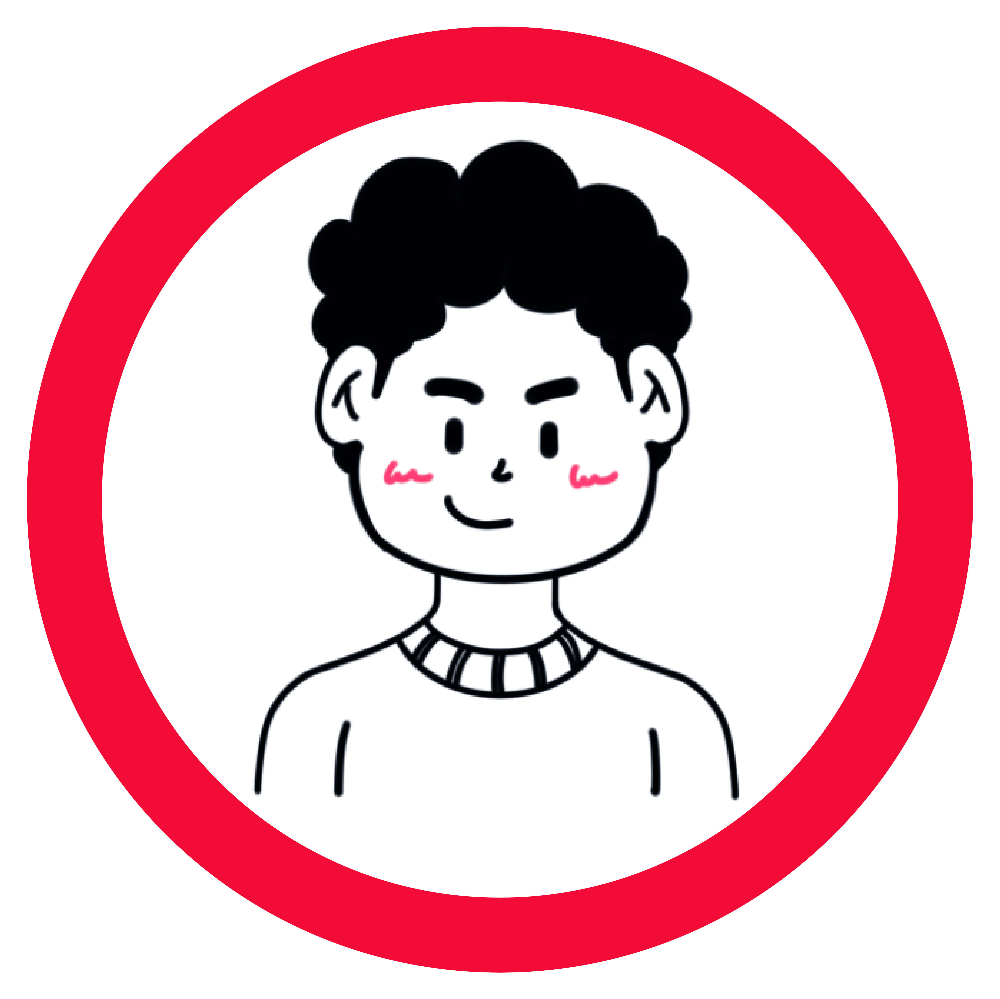
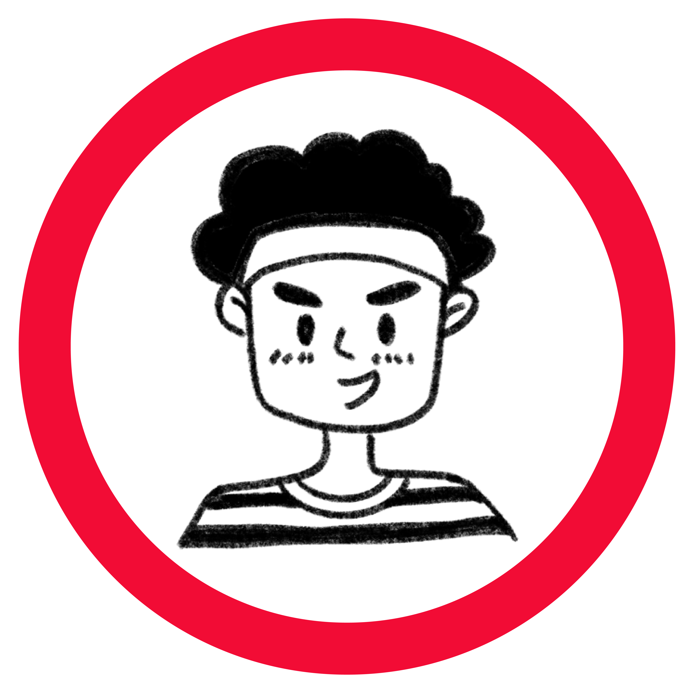
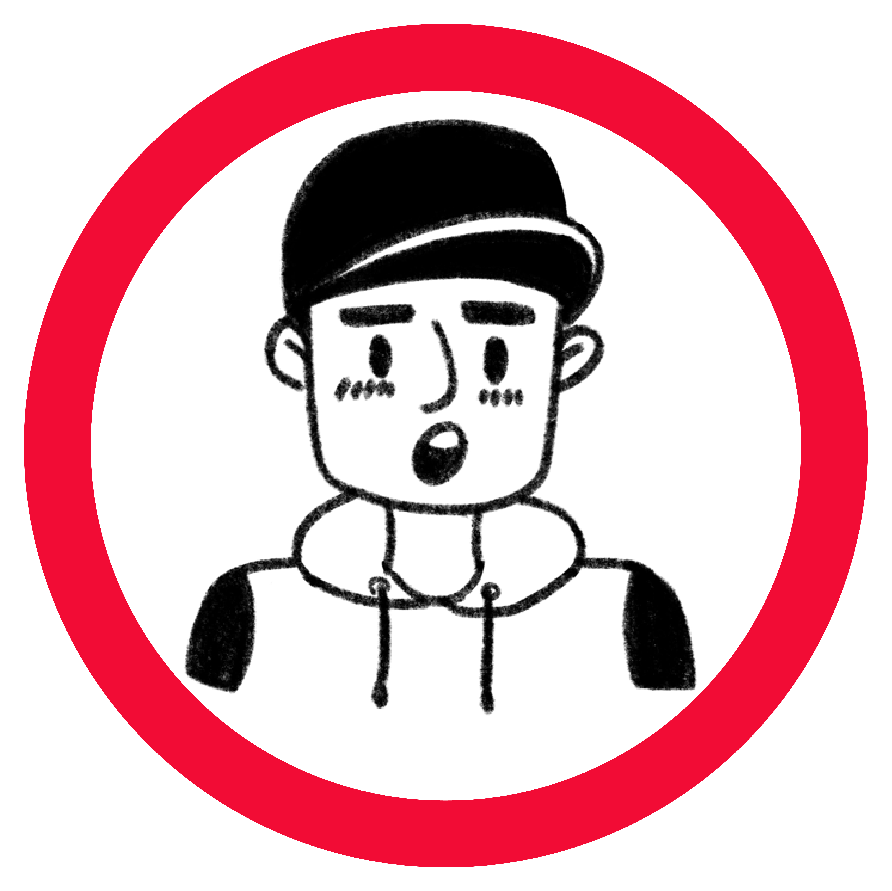

¿Qué aprendemos en Programación Web I?
Este curso está diseñado para enseñar a los estudiantes los fundamentos de la programación web utilizando tecnologías como HTML, CSS, y JavaScript. Durante el curso, los estudiantes hemos aprendido a crear páginas web interactivas que, junto al funcionamiento de Perl y Docker nos han permitido establecer proyectos para satisfacer las distintas necesidades expuestas en cada laboratorio, permitiéndonos como nuevos desarrolladores, llevar a cabo una tarea de investigación y adquisición de nuevas habilidades para cumplir con las metas establecidas en el curso.

Conoce a nuestro team...
Somos 5 estudiantes de la Escuela Profesional de Ingeniería de Sistemas,
Facultad de Ingeniería de Producción y Servicios de la UNSA
-

Geisel Reymar, Pacheco Medina
-

Gael Alexander, Huamaní Machaca
-

Andhy Brayan, Chipana Mamani
-

José León Enrique, Hatches Curo
-

Alejandra Camila, Choque Sánchez
¿Cómo funciona la página?
Esta página permite crear contenido HTML dinámico utilizando Markdown, un lenguaje simple para dar formato a texto. Podrás generar páginas personalizadas con encabezados, listas y más, sin necesidad de conocimientos avanzados de HTML.